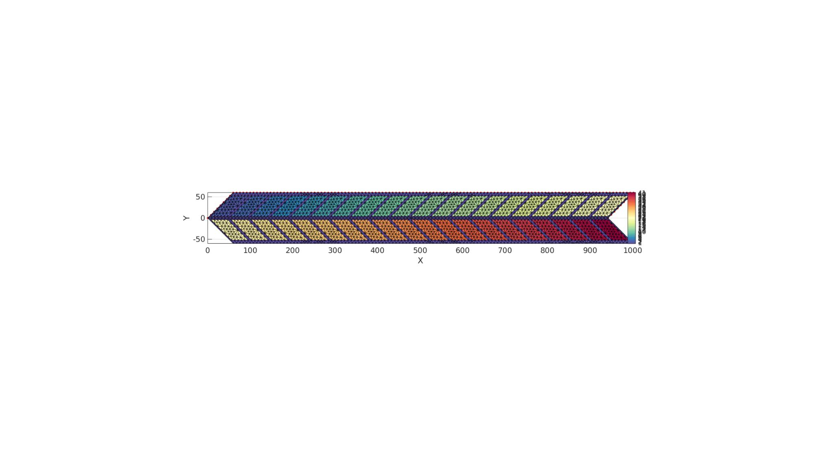
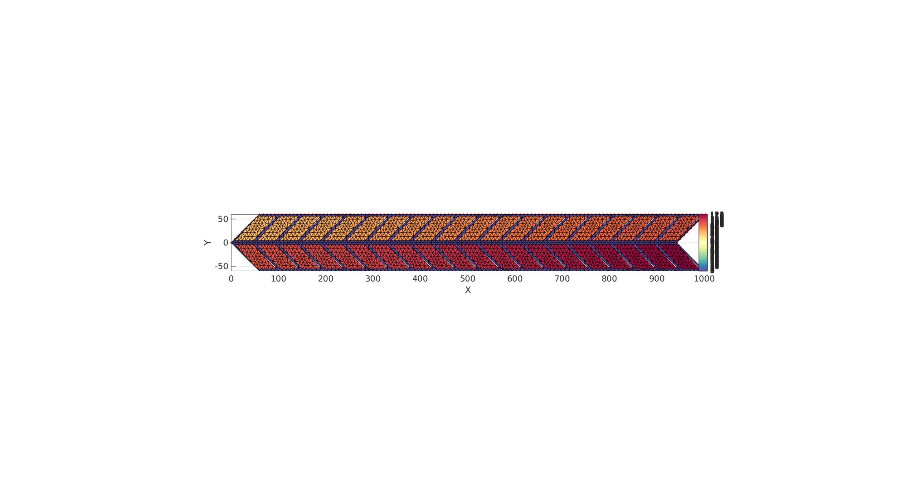
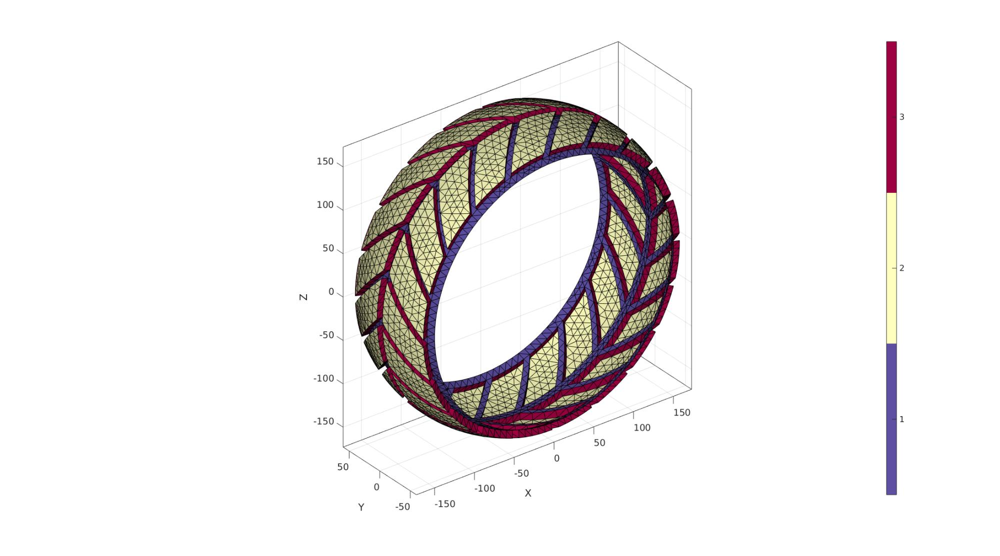
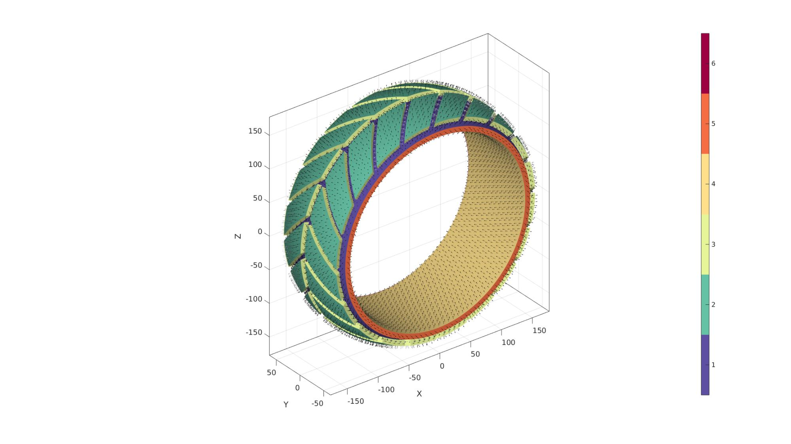
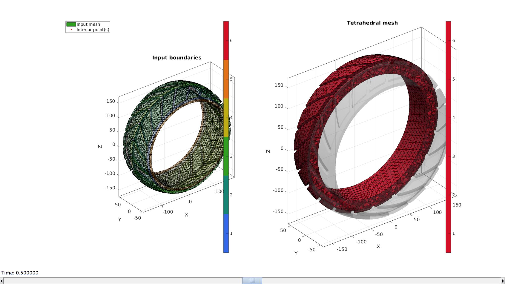
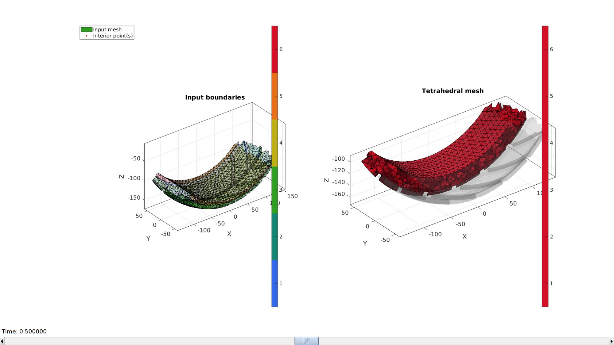
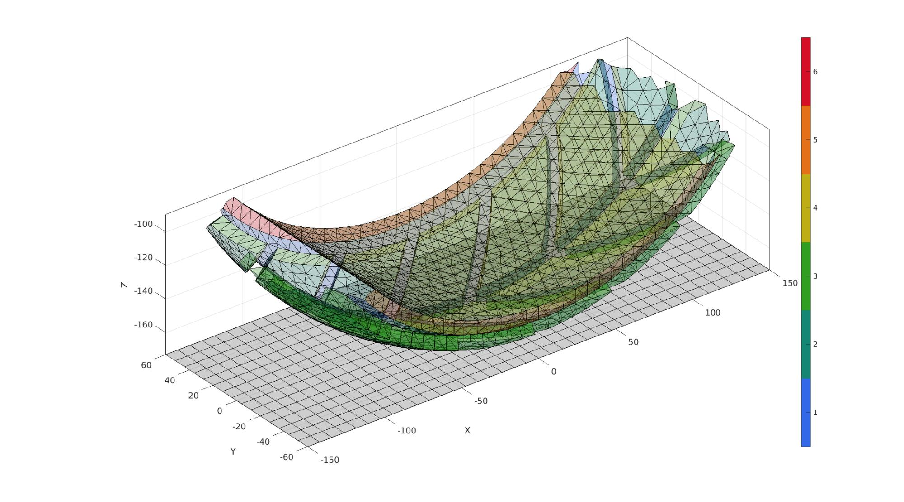
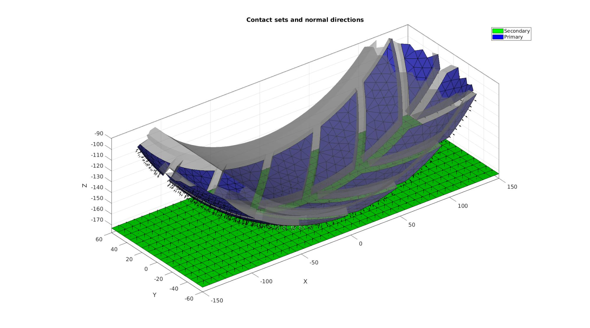
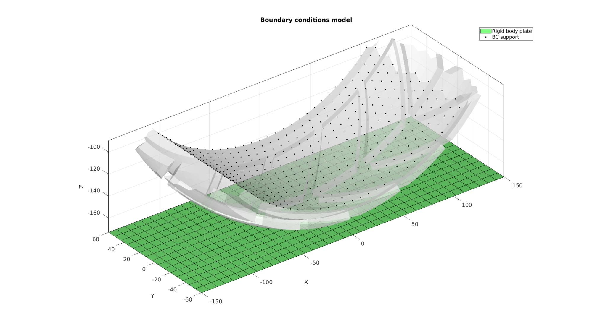
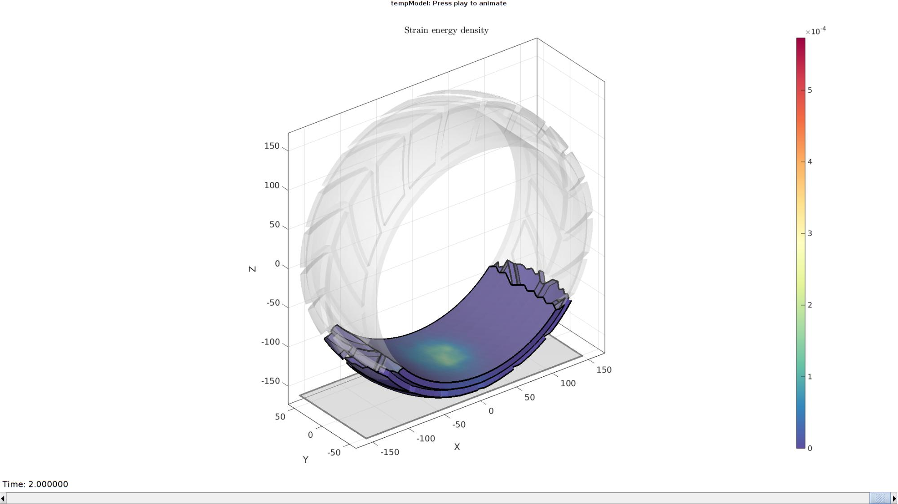

Contents
clear; close all; clc;
Plot settings
markerSize=10; markerSize2=10; fontSize=15; faceAlpha1=0.3; faceAlpha2=0.5; cMap=gjet(4);
Control parameters
% Path names defaultFolder = fileparts(fileparts(mfilename('fullpath'))); savePath=fullfile(defaultFolder,'data','temp'); % Defining file names febioFebFileNamePart='tempModel'; febioFebFileName=fullfile(savePath,[febioFebFileNamePart,'.feb']); %FEB file name febioLogFileName=[febioFebFileNamePart,'.txt']; %FEBio log file name febioLogFileName_disp=[febioFebFileNamePart,'_disp_out.txt']; %Log file name for exporting displacement febioLogFileName_force=[febioFebFileNamePart,'_force_out.txt']; %Log file name for exporting force febioLogFileName_sed=[febioFebFileNamePart,'_stress_out.txt']; %Log file name for exporting strain energy density tireWidth = 120; tireRadius = 150; tireThickness = 8; threadHeight = 8; tireBulge=tireWidth/8; pointSpacing = 8; tireCircumference = 2*pi.*tireRadius; numFeatures = 20; groveWidth = 8; distKeep=75; %Distance after which model is cropped, empty = full model displacementVert=0.8*tireThickness; displacementHor=-tireRadius/20; contactInitialOffset=0.1; %Material parameter set c1=1e-3; %Shear-modulus-like parameter m1=2; %Material parameter setting degree of non-linearity k_factor=100; %Bulk modulus factor k=c1*k_factor; %Bulk modulus % FEA control settings numTimeSteps=20; %Number of time steps desired max_refs=40; %Max reforms max_ups=0; %Set to zero to use full-Newton iterations opt_iter=25; %Optimum number of iterations max_retries=5; %Maximum number of retires dtmin=(1/numTimeSteps)/100; %Minimum time step size dtmax=1/numTimeSteps; %Maximum time step size runMode='external';%'internal'; min_residual=1e-20; %Contact parameters contactPenalty=5; laugon=0; minaug=1; maxaug=10; fric_coeff=0.5;
tireHalfWidth=tireWidth/2; featureHeight = (tireCircumference-(numFeatures*groveWidth))./numFeatures; featureWidth = tireHalfWidth-2*groveWidth; % Coordinates of 1x1 square v=[-1 -1 0;... 1 -1 0;... 1 1 0;... -1 1 0]/2; % Deformation gradient tensor for shear f=eye(3,3); f(1,2)=1; %Create boundary coordinates V1=v; %Copy square V1(:,1)=V1(:,1).*tireCircumference+tireCircumference/2; %Stretch to create circumference V1(:,2)=V1(:,2).*tireHalfWidth+tireHalfWidth/2; %Stretch to get desired width V1=evenlySpaceCurve(V1,pointSpacing,'linear',1,1:1:size(v,1)); %Evenly sample V1=(f*V1')'; %Shear %Create thread feature Vf=v; %Copy square Vf(:,1)=Vf(:,1).*featureHeight; %Stretch to create circumference Vf(:,2)=Vf(:,2).*(featureWidth+groveWidth/2)+tireHalfWidth/2-groveWidth/4; %Stretch to get desired width Vf=evenlySpaceCurve(Vf,pointSpacing,'linear',1,1:1:size(v,1)); %Evenly sample Vf(:,1)=Vf(:,1)+featureHeight/2+groveWidth/2; VF=cell(1,numFeatures); for q=1:1:numFeatures Vff=Vf; Vff(:,1)=Vf(:,1)+(q-1).*(featureHeight+groveWidth); %Shift VF{q}=(f*Vff')'; %Shear and store end
%Defining 4 regions regionSpec{1}={V1(:,[1 2])}; for q=1:1:numFeatures regionSpec{1}{q+1}=VF{q}(:,[1 2]); end for q=1:1:numFeatures regionSpec{q+1}{1}=VF{q}(:,[1 2]); end [Ft,Vt,Ct]=multiRegionTriMesh2D(regionSpec,pointSpacing,0,0); Vt(:,3)=0; Fb=fliplr(Ft); Vb=Vt; Vb(:,2)=-Vb(:,2); Cb=Ct; Cb(Cb>1)=Cb(Cb>1)-1+max(Ct); [F,V,C]=joinElementSets({Ft,Fb},{Vt,Vb},{Ct,Cb}); [F,V]=mergeVertices(F,V);
cFigure; hold on; plotV(V1,'r.-','MarkerSize',markerSize); plotV(VF,'b.-','MarkerSize',markerSize); gpatch(F,V,C); axisGeom(gca,fontSize); view(2); colormap spectral; icolorbar; gdrawnow;
cMax=max(C); numVert=size(V,1); F2=F(C>1,:); C2=C(C>1,:)+cMax; Eb1=patchBoundary(F2); Eb2=Eb1+numVert; F=[F(C==1,:);F2+numVert]; V=[V;V]; C=[C(C==1,:);C2+max(C(:))];
if tireBulge>eps(0) w=tireWidth; h=tireBulge; r=h/2+(w^2/(8*h)); a=atan((w/2)./(r-h)); TH = (V(:,2)./tireHalfWidth)*a; R = r.*ones(size(V,1),1); R(numVert+1:end)=R(numVert+1:end)+threadHeight; Z = V(:,1); [V(:,1),V(:,2),V(:,3)] = pol2cart(TH,R,Z); V=V(:,[3 2 1]); V(:,3)=V(:,3)-r+h; else V(numVert+1:end,3)=V(numVert+1:end,3)+threadHeight; end
cFigure; hold on; plotV(V1,'r.-','MarkerSize',markerSize); plotV(VF,'b.-','MarkerSize',markerSize); gpatch(F,V,C); axisGeom(gca,fontSize); view(2); colormap spectral; icolorbar; gdrawnow;
TH = V(:,1)./tireRadius; R = tireRadius+V(:,3); Z = V(:,2); [V(:,1),V(:,2),V(:,3)] = pol2cart(TH,R,Z); V=V(:,[1 3 2]); F=fliplr(F); [Eb1,V1]=patchCleanUnused(Eb1,V); [Eb2,V2]=patchCleanUnused(Eb2,V); [F,V,~,indFix]=mergeVertices(F,V); numSteps=ceil(threadHeight./pointSpacing)+1; %Create quadrilateral faces X=linspacen(V1(:,1),V2(:,1),numSteps); Y=linspacen(V1(:,2),V2(:,2),numSteps); Z=linspacen(V1(:,3),V2(:,3),numSteps); Vn=[X(:) Y(:) Z(:)]; %Vertex set Fn=repmat([fliplr(Eb1) Eb2],numSteps-1,1); q=repmat(0:(numSteps-2),size(Eb1,1),1); q=q(:); Q=[q q q+1 q+1]*size(V1,1); Fn=Fn+Q; [Fn,Vn]=quad2tri(Fn,Vn,'a');
[F,V]=patchCleanUnused(F,V);
C(C>1)=2; %Switch to use 2 for all thread profile parts
[F_out,V_out,C_out]=joinElementSets({F,Fn},{V,Vn},{C,max(C(:))+1*ones(size(Fn,1),1)});
[F_out,V_out]=patchCleanUnused(F_out,V_out);
[F_out,V_out]=mergeVertices(F_out,V_out);
Eb_out=patchBoundary(F_out);
cFigure; hold on; gpatch(F_out,V_out,C_out); % patchNormPlot(Fq,Vq); axisGeom(gca,fontSize); camlight headlight; colormap spectral; icolorbar; gdrawnow;
Create inner cylinder
inputStructCyl.cylRadius=tireRadius-tireThickness; inputStructCyl.numRadial=ceil((2*pi*inputStructCyl.cylRadius)/pointSpacing); inputStructCyl.cylHeight=tireWidth; numheight=ceil(tireWidth./pointSpacing); numheight=numheight+iseven(numheight); %Force uneven inputStructCyl.numHeight=numheight; inputStructCyl.meshType='tri';
Derive patch data for a cylinder
[F_in,V_in]=patchcylinder(inputStructCyl); V_in=V_in(:,[1 3 2]); Eb_in=patchBoundary(F_in); C_in=(max(C_out)+1)*ones(size(F_in,1),1);
inputStructGroup.outputType='label'; G_out=tesgroup(Eb_out,inputStructGroup); G_in=tesgroup(Eb_in,inputStructGroup); yMean_out=nan(2,1); yMean_in=nan(2,1); for q=1:1:2 ind_out=Eb_out(G_out==q,:); yMean_out(q)=mean(V_out(ind_out(:),2)); ind_in=Eb_in(G_in==q,:); yMean_in(q)=mean(V_in(ind_in(:),2)); end [~,ind1_out]=min(yMean_out); [~,ind2_out]=max(yMean_out); indCurve1_out=edgeListToCurve(Eb_out(G_out==ind1_out,:)); indCurve1_out=indCurve1_out(1:end-1); indCurve2_out=edgeListToCurve(Eb_out(G_out==ind2_out,:)); indCurve2_out=indCurve2_out(1:end-1); [~,ind1_in]=min(yMean_in); [~,ind2_in]=max(yMean_in); indCurve1_in=edgeListToCurve(Eb_in(G_in==ind1_in,:)); indCurve1_in=indCurve1_in(1:end-1); indCurve2_in=edgeListToCurve(Eb_in(G_in==ind2_in,:)); indCurve2_in=indCurve2_in(1:end-1); [Fs1,Vs1]=regionTriMesh2D({V_out(indCurve1_out,[1 3]),V_in(indCurve1_in,[1 3])},pointSpacing,0); Vs1(:,3)=-tireWidth/2; Vs1=Vs1(:,[1 3 2]); Cs1=(max(C_in)+1)*ones(size(Fs1,1),1); [Fs2,Vs2]=regionTriMesh2D({V_out(indCurve2_out,[1 3]),V_in(indCurve2_in,[1 3])},pointSpacing,0); Vs2(:,3)=tireWidth/2; Vs2=Vs2(:,[1 3 2]); Fs2=fliplr(Fs2); Cs2=(max(Cs1)+1)*ones(size(Fs2,1),1);
[FT,VT,CT]=joinElementSets({F_out,F_in,Fs1,Fs2},{V_out,V_in,Vs1,Vs2},{C_out,C_in,Cs1,Cs2});
[FT,VT]=patchCleanUnused(FT,VT);
[FT,VT]=mergeVertices(FT,VT);
cFigure; hold on; gpatch(FT,VT,CT,'none'); patchNormPlot(FT,VT); axisGeom(gca,fontSize); camlight headlight; colormap spectral; icolorbar; gdrawnow;
V_regions=getInnerPoint(FT,VT); %Define region points V_holes=[]; %Define hole points [regionTetVolumes]=tetVolMeanEst(FT,VT); %Volume estimate for regular tets stringOpt='-pq1.2AaY'; %Options for tetgen
Mesh using TetGen
%Create tetgen input structure inputStruct.stringOpt=stringOpt; %Tetgen options inputStruct.Faces=FT; %Boundary faces inputStruct.Nodes=VT; %Nodes of boundary inputStruct.faceBoundaryMarker=CT; inputStruct.regionPoints=V_regions; %Interior points for regions inputStruct.holePoints=V_holes; %Interior points for holes inputStruct.regionA=regionTetVolumes; %Desired tetrahedral volume for each region % Mesh model using tetrahedral elements using tetGen [meshOutput]=runTetGen(inputStruct); %Run tetGen
%%%%%%%%%%%%%%%%%%%%%%%%%%%%%%%%%%%%%%%%%%%%% --- TETGEN Tetrahedral meshing --- 21-Nov-2022 16:54:26 %%%%%%%%%%%%%%%%%%%%%%%%%%%%%%%%%%%%%%%%%%%%% --- Writing SMESH file --- 21-Nov-2022 16:54:26 ----> Adding node field ----> Adding facet field ----> Adding holes specification ----> Adding region specification --- Done --- 21-Nov-2022 16:54:26 --- Running TetGen to mesh input boundary--- 21-Nov-2022 16:54:26 Opening /mnt/data/MATLAB/GIBBON/data/temp/temp.smesh. Delaunizing vertices... Delaunay seconds: 0.217484 Creating surface mesh ... Surface mesh seconds: 0.007777 Recovering boundaries... Boundary recovery seconds: 0.022495 Removing exterior tetrahedra ... Spreading region attributes. Exterior tets removal seconds: 0.006895 Recovering Delaunayness... Delaunay recovery seconds: 0.013661 Refining mesh... 6409 insertions, added 4064 points, 103362 tetrahedra in queue. 2134 insertions, added 615 points, 88720 tetrahedra in queue. 2844 insertions, added 386 points, 9791 tetrahedra in queue. 3791 insertions, added 274 points, 5489 tetrahedra in queue. Refinement seconds: 0.249418 Smoothing vertices... Mesh smoothing seconds: 0.391893 Improving mesh... Mesh improvement seconds: 0.011337 Writing /mnt/data/MATLAB/GIBBON/data/temp/temp.1.node. Writing /mnt/data/MATLAB/GIBBON/data/temp/temp.1.ele. Writing /mnt/data/MATLAB/GIBBON/data/temp/temp.1.face. Writing /mnt/data/MATLAB/GIBBON/data/temp/temp.1.edge. Output seconds: 0.113535 Total running seconds: 1.03492 Statistics: Input points: 4808 Input facets: 9616 Input segments: 14424 Input holes: 0 Input regions: 1 Mesh points: 10225 Mesh tetrahedra: 47884 Mesh faces: 100576 Mesh faces on exterior boundary: 9616 Mesh faces on input facets: 9616 Mesh edges on input segments: 14424 Steiner points inside domain: 5417 --- Done --- 21-Nov-2022 16:54:27 %%%%%%%%%%%%%%%%%%%%%%%%%%%%%%%%%%%%%%%%%%%%% --- Importing TetGen files --- 21-Nov-2022 16:54:27 --- Done --- 21-Nov-2022 16:54:27
Access mesh output structure
E=meshOutput.elements; %The elements V=meshOutput.nodes; %The vertices or nodes Fb=meshOutput.facesBoundary; %The boundary faces Cb=meshOutput.boundaryMarker; %The boundary markers
Visualization
hf=cFigure; subplot(1,2,1); hold on; title('Input boundaries','FontSize',fontSize); hp(1)=gpatch(Fb,V,Cb,'k',faceAlpha1); hp(2)=plotV(V_regions,'r.','MarkerSize',markerSize); legend(hp,{'Input mesh','Interior point(s)'},'Location','NorthWestOutside'); axisGeom(gca,fontSize); camlight headlight; colormap(cMap); icolorbar; hs=subplot(1,2,2); hold on; title('Tetrahedral mesh','FontSize',fontSize); % Visualizing using |meshView| optionStruct.hFig=[hf,hs]; meshView(meshOutput,optionStruct); axisGeom(gca,fontSize); gdrawnow;
if ~isempty(distKeep) Fb_full=Fb; V_full=V; [Fb_full,V_full]=patchCleanUnused(Fb_full,V_full); VE=patchCentre(E,V); logicKeepElements = VE(:,3) <= (min(VE(:,3))+distKeep); E=E(logicKeepElements,:); indKeepNodes=unique(E); logicKeep_Fb=all(ismember(Fb,indKeepNodes),2); Fb=Fb(logicKeep_Fb,:); Cb=Cb(logicKeep_Fb,:); logicKeep_F=all(ismember(F,indKeepNodes),2); F=F(logicKeep_F,:); [E,V,indFix]=patchCleanUnused(E,V); Fb=indFix(Fb); F=indFix(F); meshOutput.nodes=V; meshOutput.facesBoundary=Fb; meshOutput.boundaryMarker=Cb; meshOutput.faces=F; meshOutput.elements=E; meshOutput.elementMaterialID=ones(size(E,1),1); else Fb_full=Fb; V_full=V; end
hf=cFigure; subplot(1,2,1); hold on; title('Input boundaries','FontSize',fontSize); hp(1)=gpatch(Fb,V,Cb,'k',faceAlpha1); hp(2)=plotV(V_regions,'r.','MarkerSize',markerSize); legend(hp,{'Input mesh','Interior point(s)'},'Location','NorthWestOutside'); axisGeom(gca,fontSize); camlight headlight; colormap(cMap); icolorbar; hs=subplot(1,2,2); hold on; title('Tetrahedral mesh','FontSize',fontSize); % Visualizing using |meshView| optionStruct.hFig=[hf,hs]; meshView(meshOutput,optionStruct); axisGeom(gca,fontSize); gdrawnow;
plateDim=[2*tireRadius tireWidth]; plateEl=ceil(plateDim./pointSpacing); [Eg,Vg]=quadPlate(plateDim,plateEl); Vg(:,3)=Vg(:,3)+min(VT(:,3))-contactInitialOffset; center_of_mass=mean(Vg,1);
Joining node sets
Eg=Eg+size(V,1); %Fixed element indices V=[V;Vg;]; %Combined node sets
cFigure; hold on; hp(1)=gpatch(Fb,V,Cb,'k',faceAlpha1); hp(2)=gpatch(Eg,V,'kw','k',faceAlpha1); % legend(hp,{'Input mesh','Interior point(s)'},'Location','NorthWestOutside'); axisGeom(gca,fontSize); camlight headlight; colormap(cMap); icolorbar; gdrawnow;
Define contact surfaces
% The rigid master surface of the sphere F_contact_secondary=Eg; % The deformable slave surface of the slab logicContactSurf1=Cb==2; F_contact_primary=fliplr(Fb(logicContactSurf1,:)); % Plotting surface models cFigure; hold on; title('Contact sets and normal directions','FontSize',fontSize); gpatch(Fb,V,'kw','none',faceAlpha2); hl(1)=gpatch(F_contact_secondary,V,'g','k',1); patchNormPlot(F_contact_secondary,V); hl(2)=gpatch(F_contact_primary,V,'b','k',1); patchNormPlot(F_contact_primary,V); legend(hl,{'Secondary','Primary'}); axisGeom(gca,fontSize); camlight headlight; drawnow;
Define boundary conditions
%Supported nodes
bcSupportList=unique(Fb(Cb==4,:));
Visualize BC's
hf=cFigure; title('Boundary conditions model','FontSize',fontSize); xlabel('X','FontSize',fontSize); ylabel('Y','FontSize',fontSize); zlabel('Z','FontSize',fontSize); hold on; gpatch(Fb,V,'w','none',faceAlpha2); hl2(1)=gpatch(Eg,V,'gw','k',1); hl2(2)=plotV(V(bcSupportList,:),'k.','MarkerSize',markerSize); legend(hl2,{'Rigid body plate','BC support'}); axisGeom(gca,fontSize); camlight headlight; drawnow;
Defining the FEBio input structure
See also febioStructTemplate and febioStruct2xml and the FEBio user manual.
%Get a template with default settings [febio_spec]=febioStructTemplate; %febio_spec version febio_spec.ATTR.version='3.0'; %Module section febio_spec.Module.ATTR.type='solid'; %Create control structure for use by all steps febio_spec.Control.analysis='STATIC'; stepStruct.Control.time_steps=numTimeSteps; stepStruct.Control.step_size=1/numTimeSteps; stepStruct.Control.solver.max_refs=max_refs; stepStruct.Control.solver.max_ups=max_ups; stepStruct.Control.solver.symmetric_stiffness=0; febio_spec.Control.solver.min_residual=min_residual; stepStruct.Control.time_stepper.dtmin=dtmin; stepStruct.Control.time_stepper.dtmax=dtmax; stepStruct.Control.time_stepper.max_retries=max_retries; stepStruct.Control.time_stepper.opt_iter=opt_iter; %Add template based default settings to proposed control section [stepStruct.Control]=structComplete(stepStruct.Control,febio_spec.Control,1); %Complement provided with default if missing %Remove control field (part of template) since step specific control sections are used febio_spec=rmfield(febio_spec,'Control'); febio_spec.Step.step{1}.Control=stepStruct.Control; febio_spec.Step.step{1}.ATTR.id=1; febio_spec.Step.step{2}.Control=stepStruct.Control; febio_spec.Step.step{2}.ATTR.id=2; %Material section materialName1='Material1'; febio_spec.Material.material{1}.ATTR.name=materialName1; febio_spec.Material.material{1}.ATTR.type='Ogden'; febio_spec.Material.material{1}.ATTR.id=1; febio_spec.Material.material{1}.c1=c1; febio_spec.Material.material{1}.m1=m1; febio_spec.Material.material{1}.c2=c1; febio_spec.Material.material{1}.m2=-m1; febio_spec.Material.material{1}.k=k; materialName2='Material2'; febio_spec.Material.material{2}.ATTR.name=materialName2; febio_spec.Material.material{2}.ATTR.type='rigid body'; febio_spec.Material.material{2}.ATTR.id=2; febio_spec.Material.material{2}.density=1; febio_spec.Material.material{2}.center_of_mass=center_of_mass; %Mesh section % -> Nodes febio_spec.Mesh.Nodes{1}.ATTR.name='nodeSet_all'; %The node set name febio_spec.Mesh.Nodes{1}.node.ATTR.id=(1:size(V,1))'; %The node id's febio_spec.Mesh.Nodes{1}.node.VAL=V; %The nodel coordinates % -> Elements partName1='Part1'; febio_spec.Mesh.Elements{1}.ATTR.name=partName1; %Name of this part febio_spec.Mesh.Elements{1}.ATTR.type='tet4'; %Element type febio_spec.Mesh.Elements{1}.elem.ATTR.id=(1:1:size(E,1))'; %Element id's febio_spec.Mesh.Elements{1}.elem.VAL=E; %The element matrix partName2='Part2'; febio_spec.Mesh.Elements{2}.ATTR.name=partName2; %Name of this part febio_spec.Mesh.Elements{2}.ATTR.type='quad4'; %Element type febio_spec.Mesh.Elements{2}.elem.ATTR.id=size(E,1)+(1:1:size(Eg,1))'; %Element id's febio_spec.Mesh.Elements{2}.elem.VAL=Eg; %The element matrix % -> NodeSets nodeSetName1='bcSupportList'; febio_spec.Mesh.NodeSet{1}.ATTR.name=nodeSetName1; febio_spec.Mesh.NodeSet{1}.node.ATTR.id=bcSupportList(:); %MeshDomains section febio_spec.MeshDomains.SolidDomain.ATTR.name=partName1; febio_spec.MeshDomains.SolidDomain.ATTR.mat=materialName1; febio_spec.MeshDomains.ShellDomain.ATTR.name=partName2; febio_spec.MeshDomains.ShellDomain.ATTR.mat=materialName2; % -> Surfaces surfaceName1='contactSurface1'; febio_spec.Mesh.Surface{1}.ATTR.name=surfaceName1; febio_spec.Mesh.Surface{1}.quad4.ATTR.id=(1:1:size(F_contact_secondary,1))'; febio_spec.Mesh.Surface{1}.quad4.VAL=F_contact_secondary; surfaceName2='contactSurface2'; febio_spec.Mesh.Surface{2}.ATTR.name=surfaceName2; febio_spec.Mesh.Surface{2}.tri3.ATTR.id=(1:1:size(F_contact_primary,1))'; febio_spec.Mesh.Surface{2}.tri3.VAL=F_contact_primary; % -> Surface pairs febio_spec.Mesh.SurfacePair{1}.ATTR.name='Contact1'; febio_spec.Mesh.SurfacePair{1}.primary=surfaceName2; febio_spec.Mesh.SurfacePair{1}.secondary=surfaceName1; %Boundary condition section % -> Fix boundary conditions febio_spec.Boundary.bc{1}.ATTR.type='fix'; febio_spec.Boundary.bc{1}.ATTR.node_set=nodeSetName1; febio_spec.Boundary.bc{1}.dofs='x,y,z'; %Rigid section % -> Prescribed rigid body boundary conditions febio_spec.Step.step{1}.Rigid.rigid_constraint{1}.ATTR.name='RigidFix_1'; febio_spec.Step.step{1}.Rigid.rigid_constraint{1}.ATTR.type='fix'; febio_spec.Step.step{1}.Rigid.rigid_constraint{1}.rb=2; febio_spec.Step.step{1}.Rigid.rigid_constraint{1}.dofs='Rx,Ry'; febio_spec.Step.step{1}.Rigid.rigid_constraint{2}.ATTR.name='RigidPrescribe'; febio_spec.Step.step{1}.Rigid.rigid_constraint{2}.ATTR.type='prescribe'; febio_spec.Step.step{1}.Rigid.rigid_constraint{2}.rb=2; febio_spec.Step.step{1}.Rigid.rigid_constraint{2}.dof='Rz'; febio_spec.Step.step{1}.Rigid.rigid_constraint{2}.value.ATTR.lc=1; febio_spec.Step.step{1}.Rigid.rigid_constraint{2}.value.VAL=(displacementVert+contactInitialOffset); febio_spec.Step.step{1}.Rigid.rigid_constraint{2}.relative=0; febio_spec.Step.step{2}.Rigid.rigid_constraint{1}.ATTR.name='RigidFix_1'; febio_spec.Step.step{2}.Rigid.rigid_constraint{1}.ATTR.type='fix'; febio_spec.Step.step{2}.Rigid.rigid_constraint{1}.rb=2; febio_spec.Step.step{2}.Rigid.rigid_constraint{1}.dofs='Ry,Rz,Ru,Rv,Rw'; febio_spec.Step.step{2}.Rigid.rigid_constraint{2}.ATTR.name='RigidPrescribe'; febio_spec.Step.step{2}.Rigid.rigid_constraint{2}.ATTR.type='prescribe'; febio_spec.Step.step{2}.Rigid.rigid_constraint{2}.rb=2; febio_spec.Step.step{2}.Rigid.rigid_constraint{2}.dof='Rx'; febio_spec.Step.step{2}.Rigid.rigid_constraint{2}.value.ATTR.lc=2; febio_spec.Step.step{2}.Rigid.rigid_constraint{2}.value.VAL=displacementHor; % febio_spec.Step.step{2}.Rigid.rigid_constraint{2}.relative=1; %Contact section febio_spec.Contact.contact{1}.ATTR.type='sliding-elastic'; febio_spec.Contact.contact{1}.ATTR.surface_pair=febio_spec.Mesh.SurfacePair{1}.ATTR.name; febio_spec.Contact.contact{1}.two_pass=0; febio_spec.Contact.contact{1}.laugon=laugon; febio_spec.Contact.contact{1}.tolerance=0.2; febio_spec.Contact.contact{1}.gaptol=0; febio_spec.Contact.contact{1}.minaug=minaug; febio_spec.Contact.contact{1}.maxaug=maxaug; febio_spec.Contact.contact{1}.search_tol=0.01; febio_spec.Contact.contact{1}.search_radius=0.1*sqrt(sum((max(V,[],1)-min(V,[],1)).^2,2)); febio_spec.Contact.contact{1}.symmetric_stiffness=0; febio_spec.Contact.contact{1}.auto_penalty=1; febio_spec.Contact.contact{1}.penalty=contactPenalty; febio_spec.Contact.contact{1}.fric_coeff=fric_coeff; %LoadData section % -> load_controller febio_spec.LoadData.load_controller{1}.ATTR.id=1; febio_spec.LoadData.load_controller{1}.ATTR.type='loadcurve'; febio_spec.LoadData.load_controller{1}.interpolate='LINEAR'; febio_spec.LoadData.load_controller{1}.points.point.VAL=[0 0; 1 1; 2 1]; febio_spec.LoadData.load_controller{2}.ATTR.id=2; febio_spec.LoadData.load_controller{2}.ATTR.type='loadcurve'; febio_spec.LoadData.load_controller{2}.interpolate='LINEAR'; febio_spec.LoadData.load_controller{2}.points.point.VAL=[0 0; 1 0; 2 1]; %Output section % -> log file febio_spec.Output.logfile.ATTR.file=febioLogFileName; febio_spec.Output.logfile.node_data{1}.ATTR.file=febioLogFileName_disp; febio_spec.Output.logfile.node_data{1}.ATTR.data='ux;uy;uz'; febio_spec.Output.logfile.node_data{1}.ATTR.delim=','; febio_spec.Output.logfile.node_data{1}.VAL=1:size(V,1); febio_spec.Output.logfile.node_data{2}.ATTR.file=febioLogFileName_force; febio_spec.Output.logfile.node_data{2}.ATTR.data='Rx;Ry;Rz'; febio_spec.Output.logfile.node_data{2}.ATTR.delim=','; febio_spec.Output.logfile.node_data{2}.VAL=1:size(V,1); febio_spec.Output.logfile.element_data{1}.ATTR.file=febioLogFileName_sed; febio_spec.Output.logfile.element_data{1}.ATTR.data='sed'; febio_spec.Output.logfile.element_data{1}.ATTR.delim=','; febio_spec.Output.logfile.element_data{1}.VAL=1:size(E,1);
Quick viewing of the FEBio input file structure
The febView function can be used to view the xml structure in a MATLAB figure window.
febView(febio_spec); %Viewing the febio file
Exporting the FEBio input file
Exporting the febio_spec structure to an FEBio input file is done using the febioStruct2xml function.
febioStruct2xml(febio_spec,febioFebFileName); %Exporting to file and domNode
Running the FEBio analysis
To run the analysis defined by the created FEBio input file the runMonitorFEBio function is used. The input for this function is a structure defining job settings e.g. the FEBio input file name. The optional output runFlag informs the user if the analysis was run succesfully.
febioAnalysis.run_filename=febioFebFileName; %The input file name febioAnalysis.run_logname=febioLogFileName; %The name for the log file febioAnalysis.disp_on=1; %Display information on the command window febioAnalysis.runMode=runMode; [runFlag]=runMonitorFEBio(febioAnalysis);%START FEBio NOW!!!!!!!!
%%%%%%%%%%%%%%%%%%%%%%%%%%%%%%%%%%%%%%%%%%%%%%%%%%%%%%%%%%%%%%%%%%%%%%%%%%%
--------> RUNNING/MONITORING FEBIO JOB <-------- 21-Nov-2022 16:54:40
FEBio path: /home/kevin/FEBioStudio/bin/febio3
# Attempt removal of existing log files 21-Nov-2022 16:54:40
* Removal succesful 21-Nov-2022 16:54:40
# Attempt removal of existing .xplt files 21-Nov-2022 16:54:40
* Removal succesful 21-Nov-2022 16:54:40
# Starting FEBio... 21-Nov-2022 16:54:40
Max. total analysis time is: Inf s
* Waiting for log file creation 21-Nov-2022 16:54:40
Max. wait time: 30 s
* Log file found. 21-Nov-2022 16:54:40
# Parsing log file... 21-Nov-2022 16:54:40
number of iterations : 4 21-Nov-2022 16:54:41
number of reformations : 4 21-Nov-2022 16:54:41
------- converged at time : 0.05 21-Nov-2022 16:54:41
number of iterations : 4 21-Nov-2022 16:54:41
number of reformations : 4 21-Nov-2022 16:54:41
------- converged at time : 0.1 21-Nov-2022 16:54:41
number of iterations : 5 21-Nov-2022 16:54:42
number of reformations : 5 21-Nov-2022 16:54:42
------- converged at time : 0.15 21-Nov-2022 16:54:42
number of iterations : 4 21-Nov-2022 16:54:42
number of reformations : 4 21-Nov-2022 16:54:42
------- converged at time : 0.2 21-Nov-2022 16:54:42
number of iterations : 4 21-Nov-2022 16:54:43
number of reformations : 4 21-Nov-2022 16:54:43
------- converged at time : 0.25 21-Nov-2022 16:54:43
number of iterations : 4 21-Nov-2022 16:54:43
number of reformations : 4 21-Nov-2022 16:54:43
------- converged at time : 0.3 21-Nov-2022 16:54:43
number of iterations : 4 21-Nov-2022 16:54:44
number of reformations : 4 21-Nov-2022 16:54:44
------- converged at time : 0.35 21-Nov-2022 16:54:44
number of iterations : 5 21-Nov-2022 16:54:44
number of reformations : 5 21-Nov-2022 16:54:44
------- converged at time : 0.4 21-Nov-2022 16:54:44
number of iterations : 4 21-Nov-2022 16:54:45
number of reformations : 4 21-Nov-2022 16:54:45
------- converged at time : 0.45 21-Nov-2022 16:54:45
number of iterations : 5 21-Nov-2022 16:54:46
number of reformations : 5 21-Nov-2022 16:54:46
------- converged at time : 0.5 21-Nov-2022 16:54:46
number of iterations : 4 21-Nov-2022 16:54:46
number of reformations : 4 21-Nov-2022 16:54:46
------- converged at time : 0.55 21-Nov-2022 16:54:46
number of iterations : 4 21-Nov-2022 16:54:47
number of reformations : 4 21-Nov-2022 16:54:47
------- converged at time : 0.6 21-Nov-2022 16:54:47
number of iterations : 4 21-Nov-2022 16:54:48
number of reformations : 4 21-Nov-2022 16:54:48
------- converged at time : 0.65 21-Nov-2022 16:54:48
number of iterations : 4 21-Nov-2022 16:54:48
number of reformations : 4 21-Nov-2022 16:54:48
------- converged at time : 0.7 21-Nov-2022 16:54:48
number of iterations : 4 21-Nov-2022 16:54:49
number of reformations : 4 21-Nov-2022 16:54:49
------- converged at time : 0.75 21-Nov-2022 16:54:49
number of iterations : 4 21-Nov-2022 16:54:49
number of reformations : 4 21-Nov-2022 16:54:49
------- converged at time : 0.8 21-Nov-2022 16:54:49
number of iterations : 4 21-Nov-2022 16:54:50
number of reformations : 4 21-Nov-2022 16:54:50
------- converged at time : 0.85 21-Nov-2022 16:54:50
number of iterations : 4 21-Nov-2022 16:54:50
number of reformations : 4 21-Nov-2022 16:54:50
------- converged at time : 0.9 21-Nov-2022 16:54:50
number of iterations : 4 21-Nov-2022 16:54:51
number of reformations : 4 21-Nov-2022 16:54:51
------- converged at time : 0.95 21-Nov-2022 16:54:51
number of iterations : 5 21-Nov-2022 16:54:51
number of reformations : 5 21-Nov-2022 16:54:51
------- converged at time : 1 21-Nov-2022 16:54:51
number of iterations : 5 21-Nov-2022 16:54:52
number of reformations : 5 21-Nov-2022 16:54:52
------- converged at time : 1.05 21-Nov-2022 16:54:52
number of iterations : 5 21-Nov-2022 16:54:54
number of reformations : 5 21-Nov-2022 16:54:54
------- converged at time : 1.1 21-Nov-2022 16:54:54
number of iterations : 4 21-Nov-2022 16:54:54
number of reformations : 4 21-Nov-2022 16:54:54
------- converged at time : 1.15 21-Nov-2022 16:54:54
number of iterations : 4 21-Nov-2022 16:54:55
number of reformations : 4 21-Nov-2022 16:54:55
------- converged at time : 1.2 21-Nov-2022 16:54:55
number of iterations : 5 21-Nov-2022 16:54:55
number of reformations : 5 21-Nov-2022 16:54:55
------- converged at time : 1.25 21-Nov-2022 16:54:55
number of iterations : 5 21-Nov-2022 16:54:56
number of reformations : 5 21-Nov-2022 16:54:56
------- converged at time : 1.3 21-Nov-2022 16:54:56
number of iterations : 5 21-Nov-2022 16:54:57
number of reformations : 5 21-Nov-2022 16:54:57
------- converged at time : 1.35 21-Nov-2022 16:54:57
number of iterations : 5 21-Nov-2022 16:54:57
number of reformations : 5 21-Nov-2022 16:54:57
------- converged at time : 1.4 21-Nov-2022 16:54:57
number of iterations : 5 21-Nov-2022 16:54:58
number of reformations : 5 21-Nov-2022 16:54:58
------- converged at time : 1.45 21-Nov-2022 16:54:58
number of iterations : 5 21-Nov-2022 16:54:59
number of reformations : 5 21-Nov-2022 16:54:59
------- converged at time : 1.5 21-Nov-2022 16:54:59
number of iterations : 5 21-Nov-2022 16:55:00
number of reformations : 5 21-Nov-2022 16:55:00
------- converged at time : 1.55 21-Nov-2022 16:55:00
number of iterations : 5 21-Nov-2022 16:55:00
number of reformations : 5 21-Nov-2022 16:55:00
------- converged at time : 1.6 21-Nov-2022 16:55:00
number of iterations : 5 21-Nov-2022 16:55:01
number of reformations : 5 21-Nov-2022 16:55:01
------- converged at time : 1.65 21-Nov-2022 16:55:01
number of iterations : 5 21-Nov-2022 16:55:02
number of reformations : 5 21-Nov-2022 16:55:02
------- converged at time : 1.7 21-Nov-2022 16:55:02
number of iterations : 5 21-Nov-2022 16:55:02
number of reformations : 5 21-Nov-2022 16:55:02
------- converged at time : 1.75 21-Nov-2022 16:55:02
number of iterations : 6 21-Nov-2022 16:55:03
number of reformations : 6 21-Nov-2022 16:55:03
------- converged at time : 1.8 21-Nov-2022 16:55:03
number of iterations : 6 21-Nov-2022 16:55:04
number of reformations : 6 21-Nov-2022 16:55:04
------- converged at time : 1.85 21-Nov-2022 16:55:04
number of iterations : 6 21-Nov-2022 16:55:04
number of reformations : 6 21-Nov-2022 16:55:04
------- converged at time : 1.9 21-Nov-2022 16:55:04
number of iterations : 5 21-Nov-2022 16:55:05
number of reformations : 5 21-Nov-2022 16:55:05
------- converged at time : 1.95 21-Nov-2022 16:55:05
number of iterations : 6 21-Nov-2022 16:55:06
number of reformations : 6 21-Nov-2022 16:55:06
------- converged at time : 2 21-Nov-2022 16:55:06
Elapsed time : 0:00:26 21-Nov-2022 16:55:06
N O R M A L T E R M I N A T I O N
# Done 21-Nov-2022 16:55:06
%%%%%%%%%%%%%%%%%%%%%%%%%%%%%%%%%%%%%%%%%%%%%%%%%%%%%%%%%%%%%%%%%%%%%%%%%%%
Import FEBio results
if runFlag==1 %i.e. a succesful run
Importing nodal displacements from a log file
dataStruct=importFEBio_logfile(fullfile(savePath,febioLogFileName_disp),1,1);
%Access data
N_disp_mat=dataStruct.data; %Displacement
timeVec=dataStruct.time; %Time
%Create deformed coordinate set
V_DEF=N_disp_mat+repmat(V,[1 1 size(N_disp_mat,3)]);
Importing element stress from a log file
dataStruct=importFEBio_logfile(fullfile(savePath,febioLogFileName_sed),1,1);
%Access data
E_sed_mat=dataStruct.data;
E_sed_mat(isnan(E_sed_mat))=0;
Plotting the simulated results using anim8 to visualize and animate deformations
[CV]=faceToVertexMeasure(E,V,E_sed_mat(:,:,end));
% Create basic view and store graphics handle to initiate animation
hf=cFigure; %Open figure
gtitle([febioFebFileNamePart,': Press play to animate']);
title('Strain energy density','Interpreter','Latex')
gpatch(Fb_full,V_full,'w','none',0.25);
hp=gpatch(Fb,V_DEF(:,:,end),CV,'none',1); %Add graphics object to animate
% hp.Marker='.';
% hp.MarkerSize=markerSize2;
hp.FaceColor='interp';
hp2=gpatch(Eg,V_DEF(:,:,end),'w','none',0.5); %Add graphics object to animate
Ebb=patchBoundaryLabelEdges(Fb,V,Cb);
hp3=gpatch(Ebb,V_DEF(:,:,end),'none','k',1,3);
hp4=gpatch(patchBoundary(Eg),V_DEF(:,:,end),'none','kw',1,3);
axisGeom(gca,fontSize);
colormap(spectral(250)); colorbar;
caxis([0 0.25*max(E_sed_mat(:))]);
axis(axisLim(V_DEF,V_full)); %Set axis limits statically
camlight headlight;
% Set up animation features
animStruct.Time=timeVec; %The time vector
for qt=1:1:size(N_disp_mat,3) %Loop over time increments
[CV]=faceToVertexMeasure(E,V,E_sed_mat(:,:,qt));
%Set entries in animation structure
animStruct.Handles{qt}=[hp hp hp2 hp3 hp4]; %Handles of objects to animate
animStruct.Props{qt}={'Vertices','CData','Vertices','Vertices','Vertices'}; %Properties of objects to animate
animStruct.Set{qt}={V_DEF(:,:,qt),CV,V_DEF(:,:,qt),V_DEF(:,:,qt),V_DEF(:,:,qt)}; %Property values for to set in order to animate
end
anim8(hf,animStruct); %Initiate animation feature
drawnow;
 end

GIBBON www.gibboncode.org
Kevin Mattheus Moerman, gibbon.toolbox@gmail.com
GIBBON footer text
License: https://github.com/gibbonCode/GIBBON/blob/master/LICENSE
GIBBON: The Geometry and Image-based Bioengineering add-On. A toolbox for image segmentation, image-based modeling, meshing, and finite element analysis.
Copyright (C) 2006-2022 Kevin Mattheus Moerman and the GIBBON contributors
This program is free software: you can redistribute it and/or modify it under the terms of the GNU General Public License as published by the Free Software Foundation, either version 3 of the License, or (at your option) any later version.
This program is distributed in the hope that it will be useful, but WITHOUT ANY WARRANTY; without even the implied warranty of MERCHANTABILITY or FITNESS FOR A PARTICULAR PURPOSE. See the GNU General Public License for more details.
You should have received a copy of the GNU General Public License along with this program. If not, see http://www.gnu.org/licenses/.